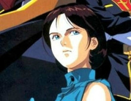

著名的NewType（新人类）高达驾驶员，父亲和母亲均是高达Mk2的设计负责人。 由于被提坦斯的捷利特嘲笑自己女性化的名字而大打出手，后来夺取了高达Mk2跟随夏亚一同加入了奥古。在真正理解奥古作战的意义后与夏亚、阿姆罗等前辈协同作战最终击溃了提坦斯。 拥有比阿姆罗更强大的NT能力，富野曾表示卡缪是整个UC时代中NT能力最强的人物；卡缪出生于side7——青色诺亚，父母都是高级士官，学业优秀，一直对自己的名字有自卑感， 所以参加很多激烈的体育运动来证明自己，学习空手道，曾经获得滑翔翼冠军和小型MS比赛冠军。 U.C.0087年3月2日这一天，卡缪不惜逃空手道社团训练课而赶至宇宙空港，想让他所崇拜的布莱特·诺亚舰长替他签名。 然而，在那里他并没有找到布莱特，却遇见了刚从地球调至此地的堤坦斯MS驾驶员杰利德·梅萨。听见花园丽和卡缪谈话杰利德的随口说道：“卡缪？完全是娘们的名字嘛！原来是男的？” 本来就对自己名字很在意的卡缪不假思索地冲上前去，重重地揍了对方一拳，一旁提坦斯的士兵们一拥而上将他抓了起来。他的父母保他出来，可是他在被释放的时候去再次打人。 此时，科瓦特罗（即夏亚）率着手下驾驶着MS利古多亚斯冲入青色1号，欲夺取RX-178高达MKⅡ。 被关在基地内的卡缪趁乱逃了出来，他不顾一旁提坦斯女性驾驶员爱玛和布莱特的阻止，抢了爱玛的高达MKⅡ去教训先前殴打他的提坦斯军官。 接着，为了向柯瓦特罗表示自己没有敌意，卡缪击败了另一架高达MKⅡ，然后跟随着柯特罗来到了奥古的母舰亚加玛。

爱玛·辛 (Emma Sheen) 年龄24岁。原本作为提坦斯所属士官出场，在经历了围绕着高达MK-II所发生的一连串事件之后转投幽谷。军阶为中尉。是第九代日裔。 生于日裔军官家庭、直到提坦斯配属以前一直生活在地球上。在故事开端的四年前邂逅阿姆罗·雷。作为高达MK-II的测试机师而前往绿色诺亚赴任，但却遭遇幽谷所引发的高达MK-II抢夺事件。 在前往亚伽玛递交上司巴斯克·欧姆亲笔信的过程中，得知信函内容当中存在“如果拒绝归还盗走的高达MK-II，将处死抢夺者卡缪·维丹的双亲。”这般恐吓言语的她感到万分惊讶。 这让一直以来都信奉着提坦斯是镇压吉恩残党破坏行为的正义团体的她大受打击，转而开始质疑采取人质要挟这等卑劣手段的组织。 回到亚历山大的爱玛，带领卡缪的父亲富兰克林·比丹和三台高达MK-II投靠幽谷。正处于监视期间的她，在进驻SIDE1的30号卫星时， 从卡瓦特罗·巴吉纳处得知第30号卫星的真相（剧场版改由蕾柯娅·朗德向她播放相关调查的影像资料），自此再次认清泰坦斯的邪恶本质。 宇宙世纪0088年2月22日格里普斯战争收尾之际，爱玛成功击落叛逃提坦斯的蕾柯娅所驾驶的帕拉斯·雅典娜，但却因为蕾柯娅的遗言而动摇，打算弄清其中含义的她毫无防备地走出驾驶舱， 帕拉斯·雅典娜的残骸被亚赞·盖博所驾驶的汉谟拉比击毁，爆炸当中产生的碎片击中爱玛造成致命伤。自知时日无多的她在弥留之际告诉卡缪， Z高达能够通过吸收他人的意志转而成为自身的力量，在向他寄托对和平的夙愿之后静静死去。
宇宙世纪七十一年,之后被称为凤·村雨的少女在日本出生了.关于她的出身及家族成员，由于本人已经丧失了一年战争以前的所有记忆，因而无从得知。 宇宙世纪七十九年一月,因为吉恩公国军的殖民地落下所造成的影响，波及到了澳洲大陆相距甚远的日本，凤所居住的城镇也因地震而毁灭了。 在大灾难所引起的混乱之中，凤的家人失散在各处，她自己也失去了过去所有的记忆，一般来说丧失记忆有两种，忘掉自己全部过去的自我健忘症，以及忘掉家人及其朋友的对外健忘症， 但凤却是极为罕见的兼有两种症状的病例。在成为一片焦土的城镇漫无目的地流浪着的凤，在一周后的早晨，终于决心要一个人活下去。 可能在这一周之间发生了某个另她无法再信任他人的事件，才使她下了这个绝不依靠他人， 自己独立生活的决心。 之后，为了不让自己看来像个女孩，她剪去原本及肩的长发，自称是[京]。对一个成为灾难孤儿的八岁少女而言，在战乱之中想独立生活实在太过困难了。 她每次敞开心胸都遭到背叛，不知何时她的性格变得非常地激烈，之后她与不良集团间发生了纠纷，而遭警察逮捕,其后被安置到了感化院。 在感化院时代的凤，态度上虽然从顺乖巧，却有着会在暗地里观察周围的谨慎性格。 宇宙世纪八十五年，从以前开始就因为凤的预感准确而注意到她的地球联邦军NewType研究所之一---村雨研究所开始试图与她接触。 凤在感化院职员的指示之下，接受了村雨研究所的种种测验，她NewType的资质顺利地受到认可，正式成为研究所的受验者。 凤的担当是同研究所的主任，娜米卡·康乃尔.她冷酷地执行职务，将受验者视同白老鼠来对待。 以NewTypeNewType受验者的身份来到村雨研究所的京，受到村雨博士的喜爱，被取名村雨凤。之后与同样身份为灾难孤儿的另外两名受验者，吉尔·拉特奇耶及安玛莉·加菲德共同接受MS驾驶员的养成训练。 这与强化人训练是不一样的课程，内容是作为一个驾驶员的基础体能训练。 另一方面,村雨研究所为了提高凤的NewType能力,企图借着作为触媒而录取的另外两人之间的情感交流，来刺激她对记忆的饥饿感以及拟似的手足之情。 因此，研究所在极密之中对凤等人投下了不知名的药物。 宇宙世纪八十七年，凤还是与过去一样与他人保持距离，与吉尔和阿玛莉之间发生冲突，但在雪山特训时全体遇到了山难的危机，当时的凤才第一次打开心防，并引导同伴们逃过一劫。 凤得到了新的家人,，从失去过去的记忆中走了出来，在研究所的生活中找到幸福。然而她的无法长久，为了更进一步引出凤的NewType能力，村雨研究所开始计划透过苛刻的考验， 来处分掉已经失去利用价值的吉尔和阿玛莉。宇宙世纪八十七年四月，已冻结的可变形MS计划再度展开了。吉尔在这个未完成机体的实验中，为了保护凤而自告奋勇执行任务，但却因此而丧命。 在吉尔死去的第二天凤与阿玛莉企图逃亡，但却以失败告终。之后她再度被夺去了记忆。附带一提，这时研究所方面采取的是先恢复她的记忆之后，再全部予以消除的残酷手段。 同年5月，村雨研究所加入提坦斯的旗下，羿月，与已经开始运作的提坦斯直属部队苏德里队合流其后，凤为了与逃亡加入卡拉巴的阿姆罗·雷接触，而接近卡缪·维丹。 但是出乎预料的事情发生了。她竟与卡缪·维丹的心相互吸引，在这段恋情中，她为了达成他回到宇宙的愿望，凤背叛了军部，给了他脱离大气圈用的推进器，以此贯彻自己的爱情。 同年十一月，奇迹般获救的凤再度被监禁，与改良后的机体共同在乞利马扎罗基地接受调整。这时，为了刺杀在当地视察的加米托夫总帅，卡拉巴与奥古发动联合攻击， 她再度被当作兵器投入战场中。但是在这场战争中奇迹再次发生了。因为凤与卡缪·维丹再会了。但是相聚的时刻非常短暂，为了换取这瞬间的幸福，竟令她为了拯救卡缪·维丹，而在战场中牺牲了。 凤的生涯也许是不幸的，但或许那短暂的幸福，才是她所追求的真正回忆也说不定。
一年战争结束之后，夏亚与大部分吉翁残党一起撤退到了小行星阿克西斯(Axis)并拥戴扎比家的遗孤——德兹尔的女儿米涅瓦·扎比(Miniwa Zabi)为精神领袖。 由马哈拉加·卡恩领导重建吉翁。U.C.0083年马哈拉加·卡恩逝世，其女儿哈曼·卡恩(Haman Karn)在夏亚的推荐下成为新的领导人。 但哈曼之后却一改父亲的作风，以力图重返地球圈为目的大力扩充军备，对付反对派。 之后重回地球，并化名为“库瓦特罗” 夏亚虽反对哈曼的作风，只是希望保持殖民地的独立而非武力支配统治地球，但在此时他已经没有能力挽回大局。 以实现父亲伟大理想为目标的夏亚又再次失望，于是加入了反地球联邦武装组织——奥古(A.E.U.G.= Anti Earth Union Group)。 U.C.0088年2月22日奥古、提坦斯和阿克西斯的部队展开舰队战，提坦斯舰队遭受殖民地雷射炮攻击，最终以全灭收场。 奥古与阿克西斯的部队伤亡惨重，夏亚驾驶MSN-00100百式与哈曼的卡碧尼交战，机体被重创大破，夏亚随即行踪不明，赤色彗星又一次消失在宇宙中； 格利普斯战争亦宣告结束。经历了格利普斯战争、目睹拉拉的NT悲剧在卡缪·维丹的身上重演，夏亚更加坚定在战乱时代的NT命运注定是悲惨的。 他意识到要拯救人类、要实现全人类的革新只有把一切战争的祸端消除；而这个祸端就是地球联邦政府和那些久居地球的腐败分子；于是新的作战计划开始在赤色彗星的心中酝酿。
哈曼·卡恩，《机动战士Z高达》和《机动战士高达ZZ》中的重要角色。
阿克西斯的实质指导者。作为吉翁公国公王的亲信，马哈拉加·卡恩的次女诞生到了这个世界上。
在幼年时期就在福拉纳冈机关培育成强力的 NEWTYPE。
性格：
非常刚强高傲，平常说话非常简短干脆。给人一种实干家的印象。优秀的洞察力和高智慧，冷静及判断力兼备。然也会一时头脑发热不顾前后而行事。很强的责任感。
其天真温柔的性格由于背叛的原因被埋藏在内心的深处。凭一人的刚毅而独自飞翔。在ZZ中应该已到达了她的限界。以她一个人顽强生存下来的过程来看，的确是非常坚强的人。
与正史略有出入的官方同人作品《年轻彗星的肖像》中，14岁哈曼的性格很少女化，谈及夏亚会脸红，非常信任娜塔莉，很喜欢笑，在夏亚离开后数次忧伤的望着天空。
在初阵时即显现出来刚毅和果敢。随着故事剧情的发展，在出访side期间经历强暴未遂事件无疑成为其性格走向的重要转折点。
在经历了保守派与武斗派的内战之后，娜塔莉的死与夏亚的出逃成为了压死骆驼的最后一根稻草，名为哈曼的天真少女就此消失，取而代之的是观众熟悉的年纪轻轻的吉恩辅佐者——哈曼卡恩。
透过该作品，读者除了体会到哈曼的心路历程外，其中所揭示的战争的残酷性也可见一斑。
政治理想：
从小就接受被扎比家影响的父亲マハラジャ（马哈拉加）的相关教育，以“吉恩”为自己的世界观和使命责任而生存。
然而作为具有超一流的NEW TYPE素质的她，也在摸索这创造新型的、超越现有人类的觉悟的社会。“快将吞噬着地球的人消灭”的觉悟，复兴扎比家，在这种黑影的操纵下，也对地球居住的人进行过抹杀。